| HOME | FESTIVAL | CONFERENCE | SUBMIT | SPONSORS | ATTEND |
| 8:30
AM REGISTRATION OPENS Fischer Student Center |
|
| 9:00
AM – 10:30 AM KEYNOTE SPEAKER Lumina Theater |
|
Javi
Zubizarreta is a Basque native of Boise, Idaho. An undergraduate
at the University of Notre Dame, his documentary on Basque and South
American sheepherders in Idaho, Artzainak:
Shepherds and Sheep, aired on the Basque television station,
EiTB, in addition to festivals in France, Ireland, New Zealand, and the
Czech Republic. Javi has conducted research on the sociopolitical
ramifications of Basque Cinema through travel grants from the Nanovic
Institute for European Studies and the Undergraduate Research
Opportunity Program. In 2010, he traveled to Ireland and the Basque
Country to study the depiction of nationalism, terrorism, and violence
in film by Basque and Irish filmmakers in hopes of finding constructive
means of national expression. Additionally, his research has been
published in the UNCW-run journal Film Matters.
|
|
| 10:30 AM –
12:00 PM AM CONFERENCE Lumina Theater |
|
| 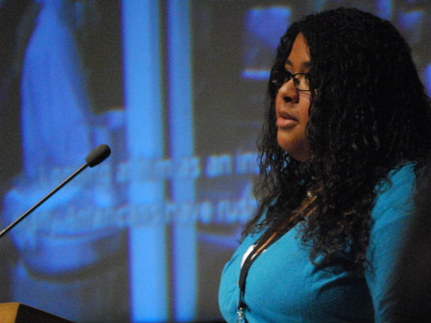
My
Name Is
Khan, and I Am
Not a Terrorist
Olivia Simmons University of North Carolina Wilmington |

War
and
Poetry
Jacob Mertens University of North Carolina Wilmington |
| 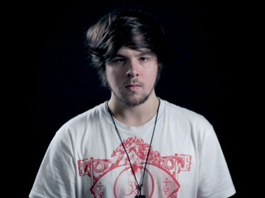
Touki
Bouki and the Postcolonial Aesthetic
Michael Daye University College Falmouth, United Kingdom |
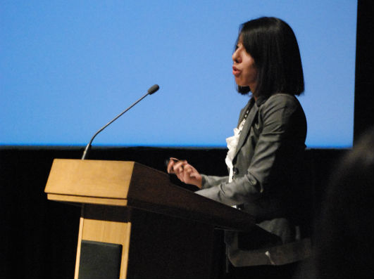
Repressed
Tension in Haute
Tension
Zulma Y. Terrones University of Chicago |
| 1:00
PM – 3:00 PM MID-DAY SCREENINGS Lumina Theater |
|

Protocol
of Person and Social Syntax, Animation
Dir. Walter Low III University of Michigan |
|

Jemila's
Tale, Narrative
Dir. Christina Bryant Ithaca College |
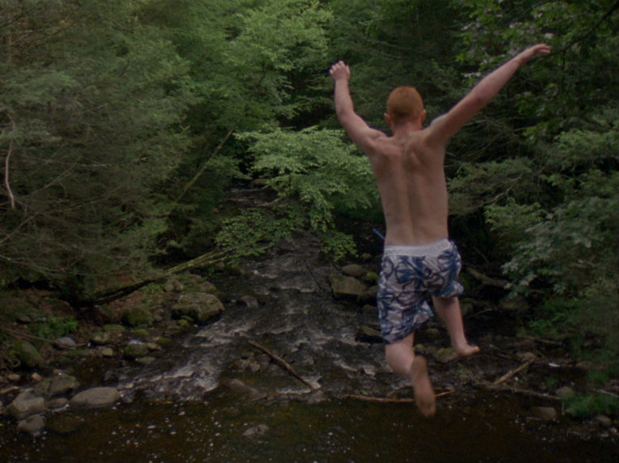
Hindsight,
Experimental Doc
Dir. Sean Hanley Emerson College |
| 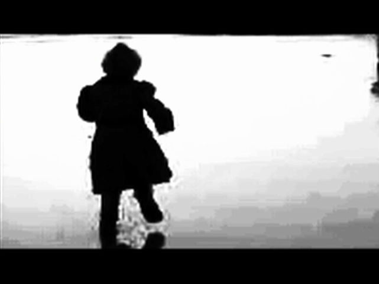
Baptism,
Experimental
Dir. Michelle Byron and Jacob Mertens University of North Carolina Wilmington |
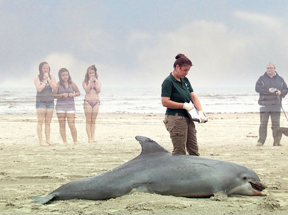
Out
of the Blue, Documentary
Dir. Matthew Stamm University of North Carolina Wilmington |
| 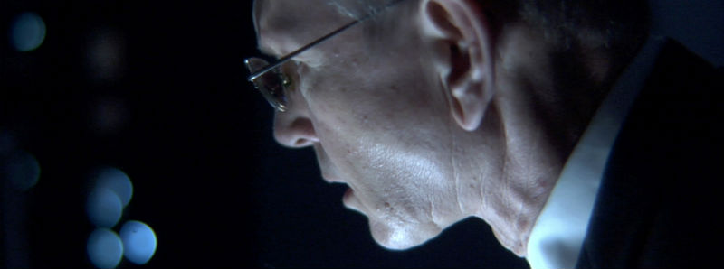
The
Sierra Project, Narrative
Dir. Gabriel de Urioste New York University |
|
| 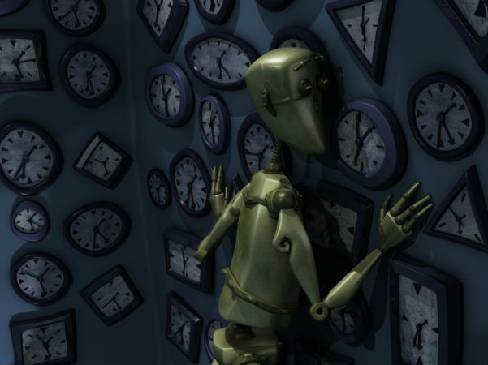
Dissonance,
Animation
Dir. Shreyasi Das Rochester Institute of Technology |
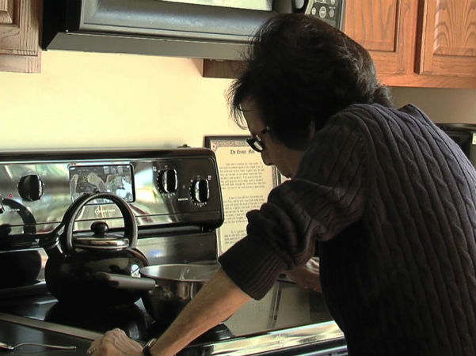
Body
of Work, Documentary
Dir. Gabby Follett University of North Carolina Wilmington |
| 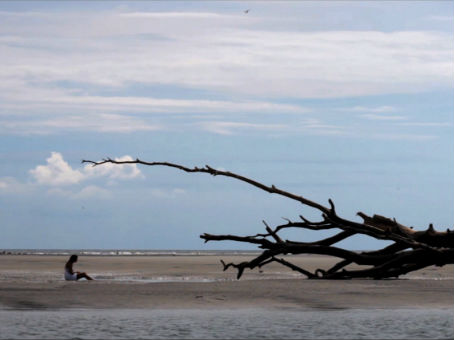
Simulacra,
Experimental Narrative
Dir. Sumie Garcia Savannah College of Art and Design |
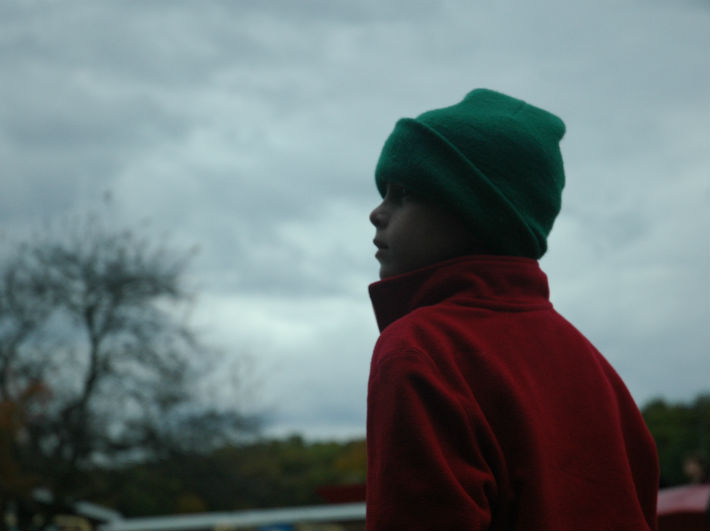
Calling
Occupants, Narrative
Dir. Talia Alberts Northwestern University |
| |
FILMMAKERS PANEL: Q&A |
| 3:00
PM – 4:30 PM PM CONFERENCE Lumina Theater |
|
| 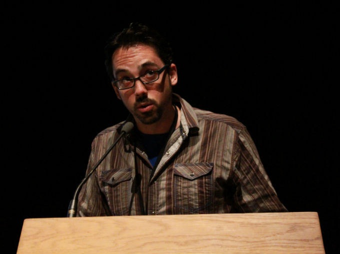
Robert
Siodmak: Contributions to Film Noir
Gregory Baker North Carolina School of the Arts |
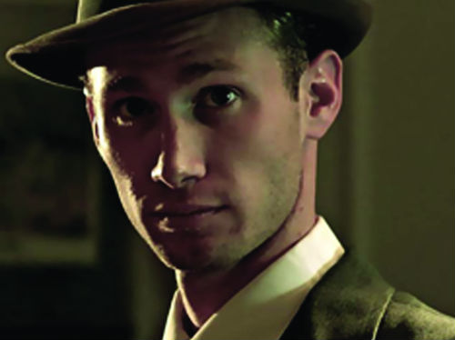
Humanist
Sexual Liberation in the Avant-Garde
William Frasca University of North Carolina Wilmington |
| 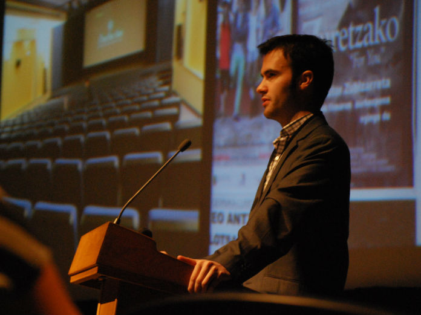
Action
Stars Who Don’t Get Any Action
Javi Zubizarreta University of Notre Dame |
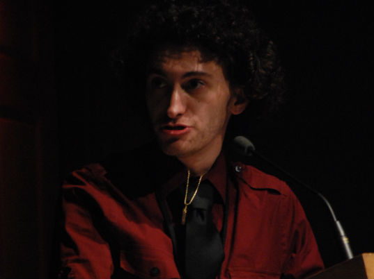
Illegal
Celluloid
Royce Marcus University of North Carolina at Wilmington |
| 4:30
PM – 5:45 PM 1HOUR:1TAKE VIDEO RACE Fischer Student Center |
|
| 6:00 PM – 6:45 PM 1HR:1TK VIDEO SCREENING Lumina Theater |
|
| |
8:00 PM COFFEE & DESSERT RECEPTION Clocktower Lounge |
| 8:30
PM – 10:30 PM NIGHTSIDE SCREENINGS Lumina Theater |
|
| 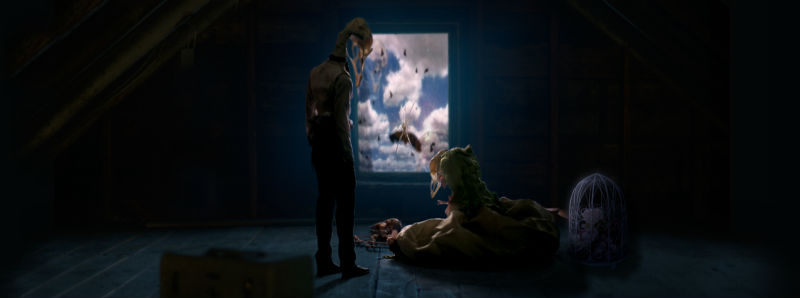
The
Birds Upstairs, Animated Narrative
Dir. Christopher Jarvis New York University |
|
| 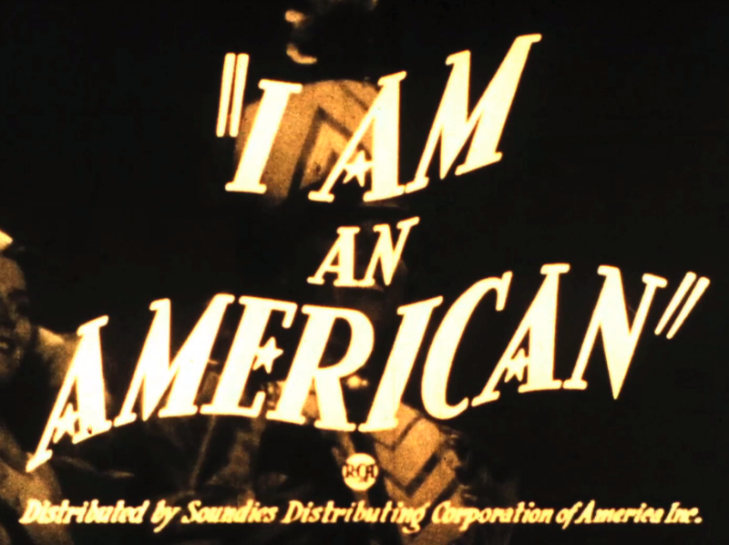
I
Am an
American, Experimental
Dir. Kyle Rogers University of Hartford |

Hypnocus
Pocused, Narrative
Dir. Victor Tadashi Columbia University |
| 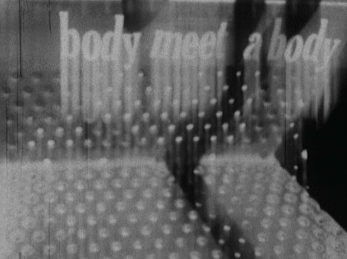
Man
Is Always On the Stairs, Experimental
Dir. Experimental University of North Carolina Chapel Hill |
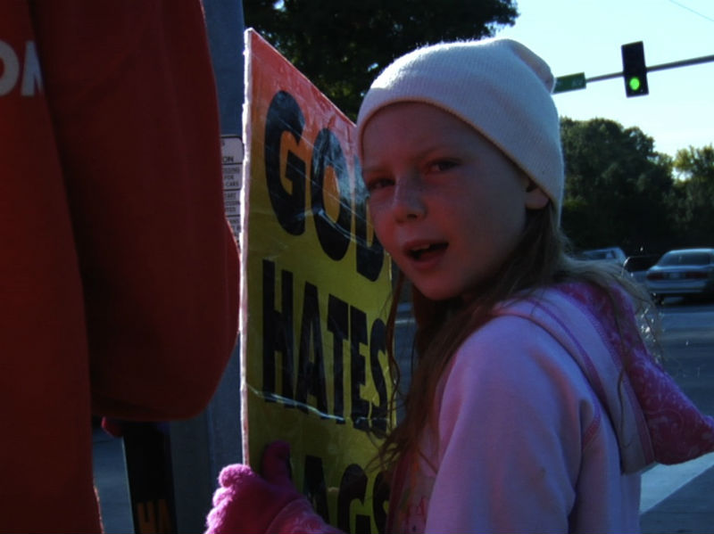
The
Elect, Documentary
Dir. Dan Moore and Erin Zacek University of Notre Dame |
| 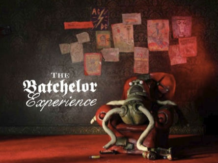
The
Batchelor Experience, Animation
Dir. Fiona Dalwood University of Melbourne |
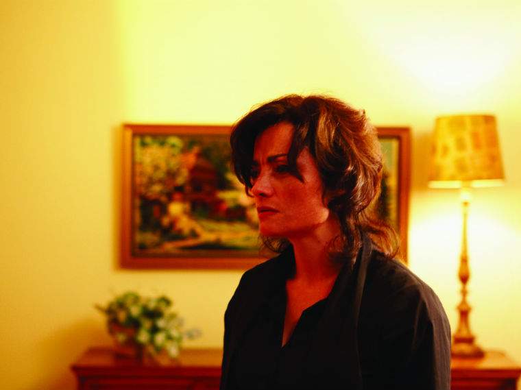
Coup
Sauvage, Narrative
Dir. Stéphane Moukarzel L'insitut national de l'image et du son |
| 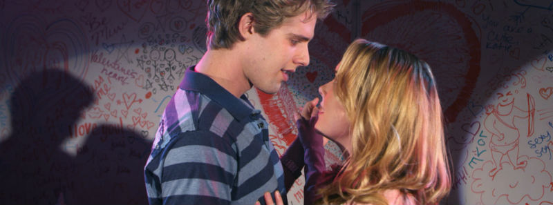
Incest!
The Musical, Narrative
Dir. Grant Reed Chapman University |
|
| |
FILMMAKERS PANEL: Q&A |
| 10:45
PM THE AFTER PARTY 105 South Front Street |
|
| |
|
Festival
passes are required for admittance to all festival and conference
events, free of charge. They can be
picked up at the registration table on the day of the event. Please
follow the steps below to register and reserve your festival pass. |
| ATTEND |
| Event Schedule |
| Parking & Venues |
| Travel & Lodging |
| ABOUT | FESTIVAL | CONFERENCE | SUBMIT | EVENTS | ATTEND | SPONSORS | PRESS |
| Mission The Awards Meet the Staff FAQ Contact Us |
Film Selections Archives 2012 |
Paper Selections Archives 2012 |
Overview Forms & Guidelines |
1Hr:1Tk Video Race Screening Tour The After Party |
Event Schedule Reserve Passes Parking & Venues Travel & Lodging |
2013 Sponsors Become a Sponsor |
In the News Visions PR |